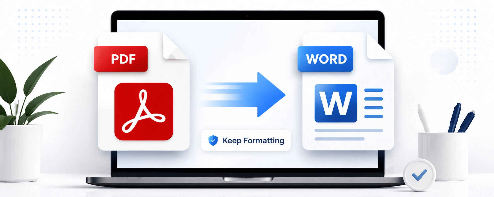
PDF Guide
PDF to Word without losing formatting
Keep fonts, spacing, tables and page structure as clean as possible when converting.
Read article →Useful articles about PDF conversion, OCR, Word editing, document security and productivity.

Keep fonts, spacing, tables and page structure as clean as possible when converting.
Read article →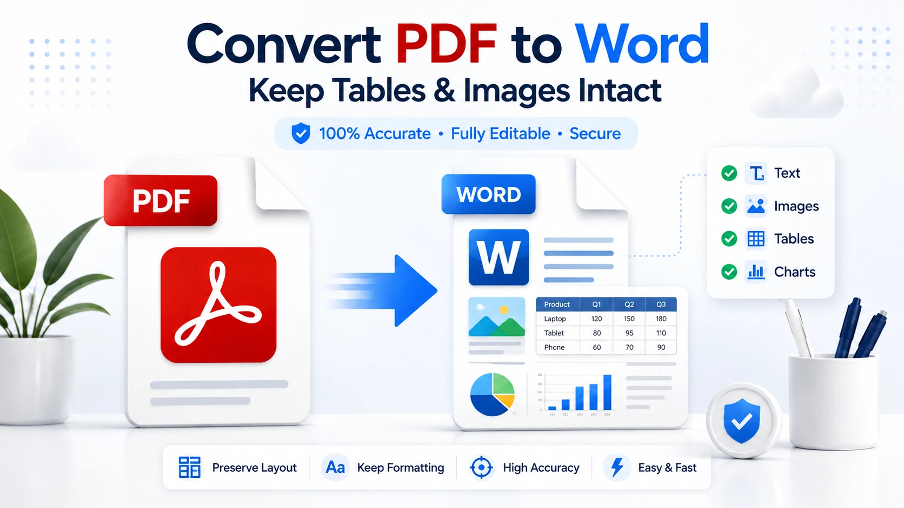
Practical checks for tables, images, captions and layout after conversion.
Read article →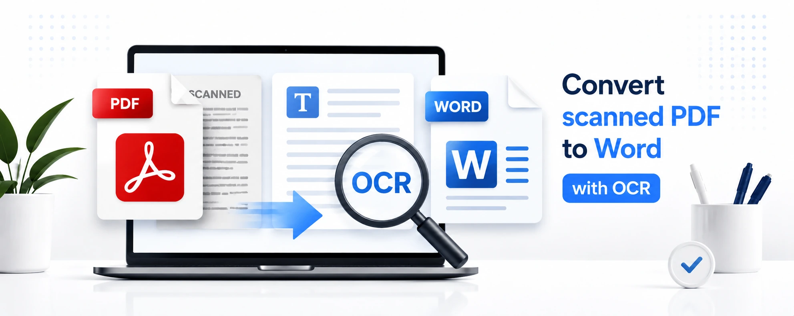
Learn why scanned PDFs need OCR and what improves recognition quality.
Read article →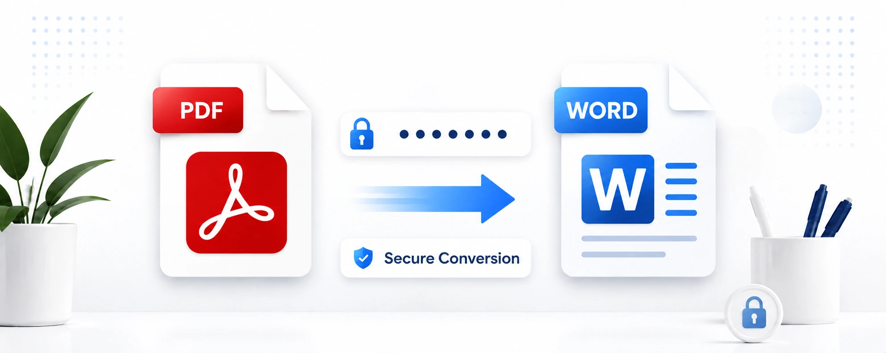
What to do when a PDF requires a password before it can be converted.
Read article →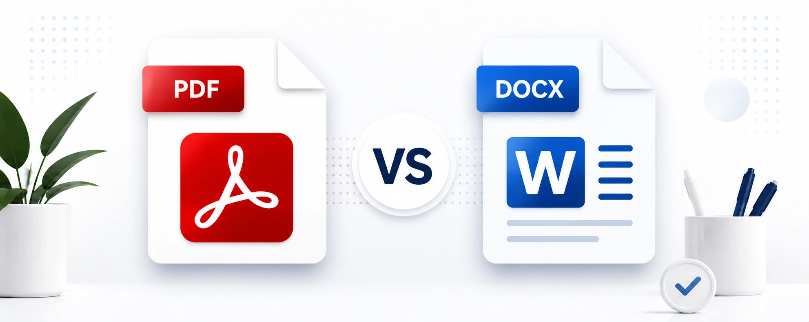
Choose the right format for editing, sharing, printing and collaboration.
Read article →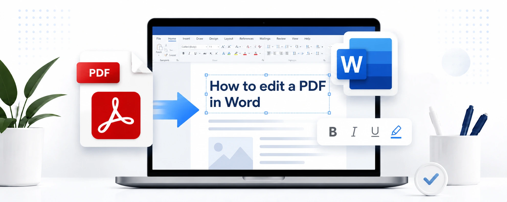
Understand what Word can edit directly and when conversion works better.
Read article →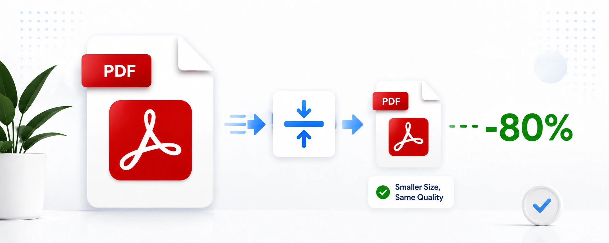
Practical ways to compress PDFs without making text difficult to read.
Read article →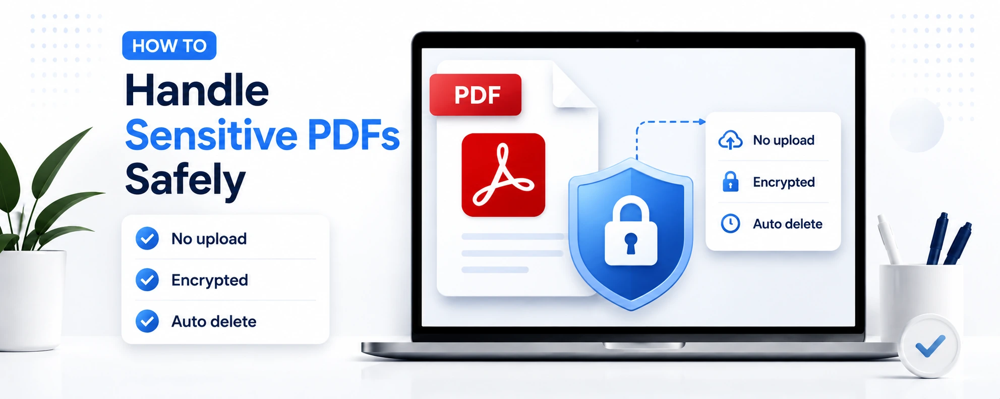
A practical checklist for converting documents that contain private information.
Read article →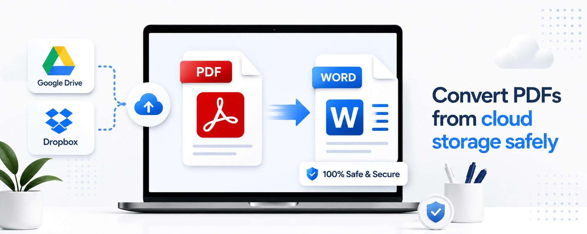
A clean workflow for files stored in Google Drive, Dropbox or another cloud service.
Read article →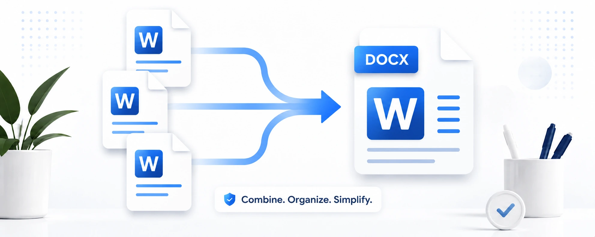
Combine several converted DOCX files into one organized Word document.
Read article →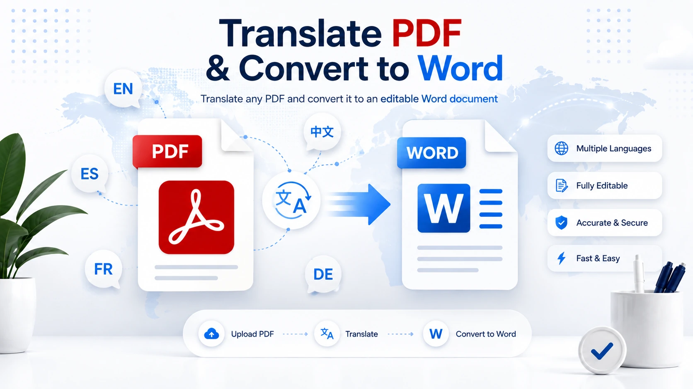
A practical workflow for translating PDF content while keeping an editable DOCX copy.
Read article →A simple workflow for converting and reviewing several PDFs without mixing up outputs.
Read article →